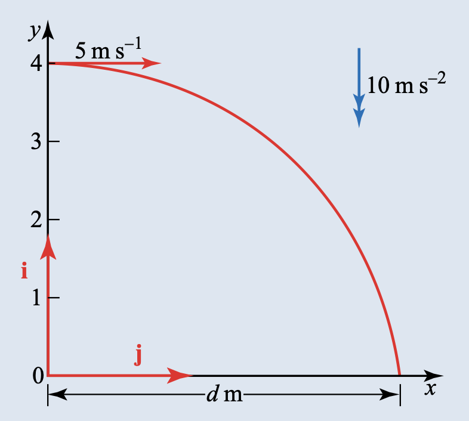
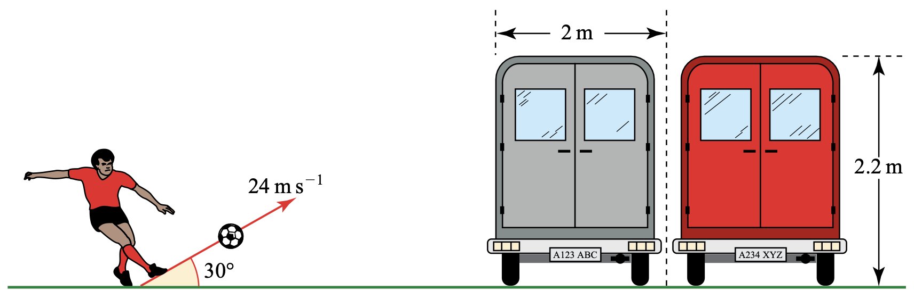
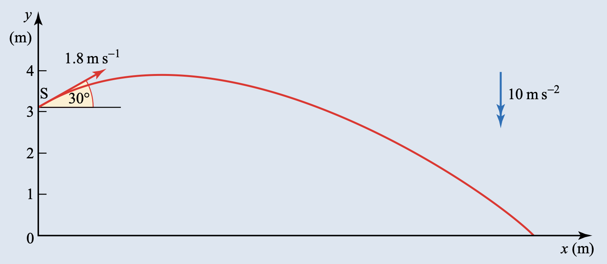
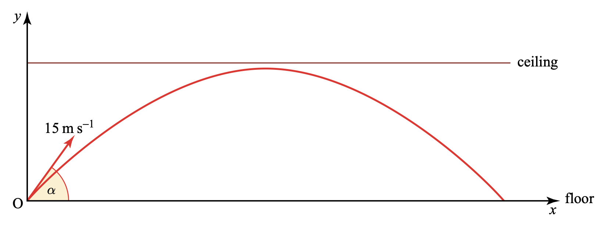
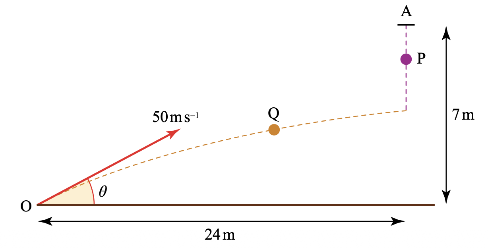

3.1 Motion of a projectile
Further Mechanics · projectile motion · trajectory · range
考生需要能够：
- 在合理建模假设下，把 projectile 视为只受重力作用的 particle；
- 分别处理水平与竖直方向的匀加速运动；
- 求任意时刻的位置、速度、speed 和 direction；
- 求最大高度、飞行时间与水平射程；
- 推导并使用 projectile 的 Cartesian equation of trajectory；
- 处理不同初始高度、碰撞、同一时刻到达及未知初速/仰角的问题。
学习路线
1. 教材知识点
1.1 Modelling assumptions
本章采用的 projectile model 是：
- projectile 是 particle，不考虑大小与自转；
- projectile 没有 engine 或其他持续动力；
- air resistance、wind 等空气效应可以忽略；
- 重力加速度恒定，教材取 \(g=10\,\mathrm{m\,s^{-2}}\)。
因此 acceleration 始终竖直向下：
\[ \mathbf a=\begin{pmatrix}0\\-g\end{pmatrix}. \]
1.2 Standard equations
若 projectile 从原点以 speed \(u\)、仰角 \(\alpha\) 发射，则
\[ u_x=u\cos\alpha,\qquad u_y=u\sin\alpha. \]
水平与竖直运动分别给出
\[ \boxed{x=ut\cos\alpha},\qquad \boxed{y=ut\sin\alpha-\frac12gt^2}, \]
以及
\[ \boxed{v_x=u\cos\alpha},\qquad \boxed{v_y=u\sin\alpha-gt}. \]
若初始点为 \((x_0,y_0)\)，只需改写为
\[ x=x_0+ut\cos\alpha,\qquad y=y_0+ut\sin\alpha-\frac12gt^2. \]
1.3 Maximum height, time of flight and range
最高点满足 \(v_y=0\)。从原点水平地面发射时，若落地点仍在 \(y=0\)，则
\[ t_{\max}=\frac{u\sin\alpha}{g},\qquad H=\frac{u^2\sin^2\alpha}{2g}, \]
\[ T=\frac{2u\sin\alpha}{g},\qquad R=u\cos\alpha\,T=\frac{u^2\sin2\alpha}{g}. \]
注意：\(T=2t_{\max}\) 只适用于发射点与落地点同高的情形。
1.4 Equation of the trajectory
由 \(x=ut\cos\alpha\) 得 \(t=x/(u\cos\alpha)\)。代入 \(y\)：
\[ \boxed{y=x\tan\alpha-\frac{gx^2}{2u^2}\sec^2\alpha} \]
或
\[ \boxed{y=x\tan\alpha-\frac{gx^2}{2u^2}(1+\tan^2\alpha)}. \]
这说明在模型成立时，trajectory 是 parabola。若初始高度是 \(h\)，则在右侧加上 \(h\)。
1.5 常见解题结构
- 先选坐标轴并明确 \(g\) 的正负；
- 先在水平、竖直方向写 component equations；
- 用题目给出的高度、水平距离或方向条件建立方程；
- 保留计算器中的未四舍五入值，最后按题目要求取三位有效数字；
- 检查时间是否为正、轨迹是否在事件发生前已经落地，以及答案是否符合几何情境。
2. Textbook Examples
Example 1.1 · Horizontal projection from a window
A ball is thrown horizontally at \(5\,\mathrm{m\,s^{-1}}\) out of a window \(4\,\mathrm m\) above the ground.

(i) How long does it take to reach the ground?
(ii) How far from the building does it land?
(iii) What is its speed just before it lands and at what angle to the ground is it moving?
Show answer
取地面上投影点为原点，\(x\) 水平向右，\(y\) 竖直向上。于是
\[ x=5t,\qquad y=4-5t^2, \]
\[ v_x=5,\qquad v_y=-10t. \]
(i) 落地时 \(y=0\)，所以
\[ t=\sqrt{4/5}=\boxed{0.894\,\mathrm s}. \]
(ii) 因此
\[ \boxed{t=0.894\,\mathrm s},\qquad \boxed{x=5t=4.47\,\mathrm m}. \]
(iii) 落地瞬间 \(v_y=-8.94\,\mathrm{m\,s^{-1}}\)，故
\[ v=\sqrt{5^2+8.94^2}=\boxed{10.2\,\mathrm{m\,s^{-1}}}, \]
\[ \tan\alpha=\frac{8.94}{5} \quad\Longrightarrow\quad \boxed{\alpha=60.8^\circ\text{ below the horizontal}}. \]Example 1.2 · Kicking a ball over vans
In this question, neglect air resistance.
In an attempt to raise money for a charity, participants are sponsored to kick a ball over some vans. The vans are each \(2.2\,\mathrm m\) high and \(2\,\mathrm m\) wide and stand on horizontal ground. One participant kicks the ball at an initial speed of \(24\,\mathrm{m\,s^{-1}}\) inclined at \(30^\circ\) to the horizontal.

(i) What are the initial values of the vertical and horizontal components of velocity?
(ii) Show that while in flight the vertical height \(y\) metres at time \(t\) seconds satisfies the equation \(y=12t-5t^2\). Calculate at what times the ball is at least \(2.2\,\mathrm m\) above the ground.
The ball should pass over as many vans as possible.
(iii) Deduce that the ball should be placed about \(4.2\) m from the first van and find how many vans the ball will clear.
(iv) What is the greatest vertical distance between the ball and the top of the vans?
Show answer
(i)
\[ u_x=24\cos30^\circ=20.8\,\mathrm{m\,s^{-1}},\qquad u_y=24\sin30^\circ=12\,\mathrm{m\,s^{-1}}. \]
(ii) 所以
\[ y=12t-5t^2. \]
球在 \(2.2\) m 高度时满足
\[ 12t-5t^2=2.2 \Longrightarrow 5t^2-12t+2.2=0 \Longrightarrow t=0.2\text{ or }2.2. \]
故球位于 van 顶部以上的时间区间为 \(0.2\le t\le2.2\)。
(iii) 对应水平位置为
\[ x=24\cos30^\circ t=20.8t, \]
即 \(x=4.15\) m 到 \(x=45.7\) m。球应放在第一辆 van 前约 \(\boxed{4.2\,\mathrm m}\)；可覆盖长度约 \(41.5\) m，因此最多越过 \(\boxed{20}\) 辆。
(iv) 最高点时 \(v_y=12-10t=0\)，得 \(t=1.2\)，所以
\[ y_{\max}=12(1.2)-5(1.2)^2=7.2\,\mathrm m. \]
最大间距为 \(7.2-2.2=\boxed{5.0\,\mathrm m}\)。Example 1.3 · Sharon diving into a swimming pool
Sharon is diving into a swimming pool. During her flight she may be modelled as a particle. Her initial velocity is \(1.8\,\mathrm{m\,s^{-1}}\) at an angle of \(30^\circ\) above the horizontal and initial position \(3.1\) m above the water. Air resistance may be neglected.

(i) Find the greatest height above the water that Sharon reaches during her dive.
(ii) Show that the time \(t\), in seconds, that it takes Sharon to reach the water is given by \(5t^2-0.9t-3.1=0\) and solve the equation to find \(t\). Explain the significance of the other root.
Just as Sharon is diving a small boy jumps into the swimming pool. He hits the water at a point in line with the diving board and \(1.5\) m from its end.
(iii) Is there an accident?
Show answer
取跳板投影点为原点：
\[ v_x=1.8\cos30^\circ=1.56, \quad v_y=0.9-10t, \]
\[ x=1.56t,\qquad y=3.1+0.9t-5t^2. \]
(i) 最高点满足 \(v_y=0\)，故 \(t=0.09\)，从而
\[ H=3.1+0.9(0.09)-5(0.09)^2=\boxed{3.14\,\mathrm m}. \]
(ii) 到水面时 \(y=0\)：
\[ 5t^2-0.9t-3.1=0, \]
所以 \(t=-0.702\) 或 \(0.882\)。物理上采用正根，故入水时间为 \(\boxed{0.882\,\mathrm s}\)。负根代表抛物线向过去延伸时与水面相交的另一点，并非实际跳水时刻。
(iii) 入水水平距离为
\[ x=1.56(0.882)=1.38\,\mathrm m. \]
与 \(1.5\) m 相差约 \(0.12\) m，不足以确保两人的质心错开，因此按教材模型结论为：$。Example 1.4 · A ceiling constraint
A boy kicks a small ball from the floor of a gymnasium with an initial velocity of \(15\,\mathrm{m\,s^{-1}}\) inclined at an angle \(\alpha\) to the horizontal. Air resistance may be neglected.

(i) Write down expressions in terms of \(\alpha\) for the vertical speed of the ball and vertical height of the ball after \(t\) seconds.
The ball just fails to touch the ceiling, which is \(5\) m high. The highest point of the motion of the ball is reached after \(T\) seconds.
(ii) Use one of your expressions to show that \(3\sin\alpha=2T\) and the other to form a second equation involving \(\sin\alpha\) and \(T\).
(iii) Eliminate \(\sin\alpha\) from your two equations to show that \(T\) has a value of \(1\).
(iv) Find the horizontal range of the ball when it is kicked at \(15\,\mathrm{m\,s^{-1}}\) from the floor of the gymnasium so that it just misses the ceiling.
Show answer
(i)
\[ v_y=15\sin\alpha-10t,qquad y=15t\sin\alpha-5t^2. \]
(ii) 最高点时 \(v_y=0\) 且 \(t=T\)，所以
\[ 15\sin\alpha=10T \Longrightarrow \boxed{3\sin\alpha=2T}. \]
最高点高度为 \(5\) m，因此
\[ 5=15T\sin\alpha-5T^2. \]
(iii) 代入 \(15\sin\alpha=10T\)：
\[ 5=10T^2-5T^2=5T^2 \Longrightarrow \boxed{T=1}. \]
(iv) 于是 \(\sin\alpha=2/3\)，总飞行时间为 \(2T=2\) s。水平速度为 \(15\cos\alpha\)，因此
\[ R=15\cos\alpha(2)=30\sqrt{1-\frac49} =\boxed{22.4\,\mathrm m}. \]3. 教材中标注 Cambridge International 的题目
这里只收录 Chapter 1 Exercise 中明确印有 Cambridge International 来源的题目；这些教材题的原始来源是 Cambridge International AS & A Level Mathematics 9709，适合作为 projectile 技巧的基础训练。配套答案依据 9781510421806_Answers.pdf。
A particle \(P\) is projected with speed \(26\,\mathrm{m\,s^{-1}}\) at an angle of \(30^\circ\) below the horizontal, from a point \(O\) which is \(80\,\mathrm m\) above horizontal ground.
(a) Calculate the distance from \(O\) of \(P\) \(2.3\) s after projection.
(b) Find the horizontal distance travelled by \(P\) before it reaches the ground.
(c) Calculate the speed and direction of motion of \(P\) immediately before it reaches the ground.
Show answer
取水平向右、竖直向上为正：
\[ u_x=26\cos30^\circ=22.5,\qquad u_y=-26\sin30^\circ=-13. \]
(a)
\[ x=22.5(2.3)=51.8,\qquad y=80-13(2.3)-5(2.3)^2=56.3. \]
因此
\[ OP=\sqrt{51.8^2+56.3^2}=\boxed{76.5\,\mathrm m}. \]
(b) 落地时 \(y=0\)：
\[ 0=80-13t-5t^2 \Longrightarrow t=\frac{-13+\sqrt{1769}}{10}=2.91\,\mathrm s. \]
所以水平距离为
\[ \boxed{x=22.5t=65.4\,\mathrm m}. \]
(c)
\[ v_x=22.5,\qquad v_y=-13-10(2.91)=-42.1. \]
\[ v=\sqrt{22.5^2+42.1^2}=\boxed{47.7\,\mathrm{m\,s^{-1}}}, \]
\[ \tan\phi=\frac{42.1}{22.5} \Longrightarrow \boxed{\phi=61.8^\circ\text{ below the horizontal}}. \]Particle \(P\) is released from rest at a point \(A\) which is \(7\,\mathrm m\) above horizontal ground. At the same instant particle \(Q\) is projected from a point \(O\) on the ground. The horizontal distance from \(O\) to the vertical projection of \(A\) is \(24\,\mathrm m\). Particle \(Q\) moves in the vertical plane containing \(O\) and \(A\), with initial speed \(50\,\mathrm{m\,s^{-1}}\) and initial direction making an angle \(\theta\) above the horizontal, where \(\tan\theta=7/24\).
(a) Show that the particles collide.
Show answer
\[ \cos\theta=\frac{24}{25},\qquad \sin\theta=\frac7{25}. \]
(a) Particle \(Q\) reaches the vertical line through \(A\) when
\[ 24=50\cos\theta\,t \Longrightarrow t=\frac{24}{50(24/25)}=0.5\,\mathrm s. \]
At this time,
\[ y_Q=50\sin\theta(0.5)-5(0.5)^2=5.75\,\mathrm m. \]
Particle \(P\) has fallen \(5(0.5)^2=1.25\) m, so
\[ y_P=7-1.25=5.75\,\mathrm m. \]
Thus \(y_P=y_Q\) at the same horizontal position, and
\[ \boxed{P\text{ and }Q\text{ collide}}. \]A particle \(P\) is projected with speed \(V\,\mathrm{m\,s^{-1}}\) at an angle of \(60^\circ\) above the horizontal from a point \(O\) on horizontal ground. At the instant \(1.5\) s after projection, \(P\) is moving at an angle of \(45^\circ\) above the horizontal.
(a) Find \(V\).
(b) Hence calculate the horizontal and vertical displacements of \(P\) from \(O\) at that instant.
Show answer
(a) At \(t=1.5\) s,
\[ v_x=V\cos60^\circ,\qquad v_y=V\sin60^\circ-15. \]
The direction is \(45^\circ\) above the horizontal, so \(v_y=v_x\):
\[ V\sin60^\circ-15=V\cos60^\circ \Longrightarrow \boxed{V=41.0\,\mathrm{m\,s^{-1}}}. \]
(b)
\[ x=V\cos60^\circ(1.5)=\boxed{30.7\,\mathrm m}, \]
\[ y=V\sin60^\circ(1.5)-5(1.5)^2 =\boxed{42.0\,\mathrm m}. \]A particle is projected from a point \(O\) on horizontal ground. Its speed of projection is \(20\,\mathrm{m\,s^{-1}}\), and its direction is upwards at angle \(\theta\) to the horizontal. The particle passes through the point \((16,7)\) and hits the ground at \(A\).
(a) Using the equation of the trajectory and \(\sec^2\theta=1+\tan^2\theta\), show that the possible values of \(\tan\theta\) are \(3/4\) and \(17/4\).
(b) Find \(OA\) for each possible value.
(c) Sketch the two possible trajectories on the same diagram.
Show answer
(a) Let \(z=\tan\theta\). The trajectory equation is
\[ y=xz-\frac{gx^2}{2(20)^2}(1+z^2). \]
At \((16,7)\),
\[ 7=16z-\frac{10(16)^2}{800}(1+z^2) \Longrightarrow 5z^2-20z+13=0. \]
Hence
\[ \boxed{z=\tan\theta=\frac34\text{ or }\frac{17}{4}}. \]
(b) At the landing point \(y=0\). For each root, substitute into the trajectory equation and take the non-zero root:
\[ \boxed{OA=38.4\,\mathrm m\quad\text{or}\quad17.8\,\mathrm m}. \]
(c) Draw two parabolas through \(O\) and \((16,7)\), one with the lower launch angle and the longer range, the other with the higher launch angle and the shorter range.A particle \(P\) is projected with speed \(25\,\mathrm{m\,s^{-1}}\) at an angle of \(45^\circ\) above the horizontal from a point \(O\) on horizontal ground. At time \(t\) seconds after projection, its horizontal and vertically upward displacements from \(O\) are \(x\) m and \(y\) m.
(a) Express \(x\) and \(y\) in terms of \(t\), and hence show that the equation of the path is \(y=x-0.016x^2\).
(b) Calculate the horizontal distance between the two positions at which \(P\) is \(2.4\) m above the ground.
Show answer
(a)
\[ x=25\cos45^\circ t=12.5\sqrt2\,t, \qquad y=25\sin45^\circ t-5t^2=12.5\sqrt2\,t-5t^2. \]
Since \(t=x/(12.5\sqrt2)\),
\[ y=x-\frac{x^2}{62.5}=\boxed{x-0.016x^2}. \]
(b) Set \(y=2.4\):
\[ 2.4=x-0.016x^2 \Longrightarrow 0.016x^2-x+2.4=0. \]
The two roots differ by
\[ \boxed{57.5\,\mathrm m}. \]A small ball is thrown horizontally with speed \(5\,\mathrm{m\,s^{-1}}\) from a point \(O\) on the roof of a building. At time \(t\) s after projection, the horizontal and vertically downwards displacements from \(O\) are \(x\) m and \(y\) m. The ball strikes the horizontal ground at \(A\), and \(OA=18\) m.

(a) Express \(x\) and \(y\) in terms of \(t\), and hence show that the trajectory is \(y=0.2x^2\).
(b) Calculate \(x\) at \(A\) and the speed immediately before impact.
Show answer
(a) Taking vertically downwards as positive,
\[ x=5t,\qquad y=5t^2. \]
Thus \(t=x/5\) and
\[ y=5\left(\frac{x}{5}\right)^2=\boxed{0.2x^2}. \]
(b) Since \(OA=18\),
\[ x^2+y^2=18^2,qquad y=0.2x^2. \]
Solving gives
\[ \boxed{x=8.85\,\mathrm m}. \]
At impact \(t=x/5\) and \(v_y=10t\), so
\[ v=\sqrt{5^2+(10t)^2}=\boxed{18.4\,\mathrm{m\,s^{-1}}}. \]4. Paper 3 真题题库
以下题目从本地 9231 Paper 3 Question Papers 中筛出直接考查 projectile motion、trajectory、range、collision 或同一时刻到达的题目；答案按对应 Mark Scheme 整理。
本节按“同一题在不同地区卷重复出现”的方式合并显示；括号中的 Paper 号表示本地题库中实际收录的卷。所有题干均保留完整小问，答案区给出关键推导或评分标准结果。若某卷只是同题重复，不再重复排版。
答案按对应 mark scheme 的得分逻辑分步整理，但页面只保留清晰的解题过程。
A particle \(P\) is projected from \(O\) on a horizontal plane and moves freely under gravity. Its initial velocity is \(100\,\mathrm{m\,s^{-1}}\) at angle \(i\) above the horizontal, where \(\tan i=4/3\). The two times at which \(P\) has height \(H\) above the plane differ by \(10\) s.
(a) Find \(H\).
(b) Find the magnitude and direction of the velocity of \(P\) one second before it strikes the plane.
Show answer
(a)
- 最高点竖直速度为零：\(0=100\sin i-10t\)。
- 由 \(\sin i=4/5\) 得最高点时刻 \(t=8\)。
- 两个等高时刻相差 \(10\) s，所以取 \(t=3\) 与 \(t=13\)。
- 代入 \(H=100\sin i\,t-5t^2\)。
- \(\boxed{H=195\,\mathrm m}\)。
(b)
- 一秒前时刻为 \(t=15\) s。
- \(v_x=100\cos i=60\)，\(v_y=100\sin i-10(15)=-70\)。
- \(|\mathbf v|=\sqrt{60^2+70^2}=\boxed{92.2\,\mathrm{m\,s^{-1}}}\)。
- \(\tan\phi=70/60\)，所以方向为 \(\boxed{49.4^\circ}\) below the horizontal。
A particle is projected with speed \(u\) at angle \(i\) above the horizontal from \(O\) on a horizontal plane. It moves freely under gravity; its horizontal and vertical displacements are \(x,y\).
(a) Use the trajectory equation and \(y=0\) to establish the range \(R\) in terms of \(u,i,g\).
(b) Deduce the greatest height \(H\) in terms of \(u,i,g\).
It is given that \(R=4H/3\).
(c) Show that \(i=60^\circ\). It is also given that \(u=40\,\mathrm{m\,s^{-1}}\).
(d) Find the values of \(x\) for which the direction of motion makes an angle less than \(45^\circ\) with the horizontal.
Show answer
(a)
- 在 trajectory equation 中令 \(y=0\)，并取非零根 \(x=R\)。
- \(\boxed{R=u^2\sin i\cos i/g=u^2\sin2i/g}\)。
(b)
- 最高点满足 \(v_y=0\)，即 \(t=u\sin i/g\)，并代回 \(y\)。
- \(\boxed{H=u^2\sin^2i/(2g)}\)。
(c)
- 把 \(R=4H/3\) 代入上面两式并化简：\(\tan i=\sqrt3\)。
- \(\boxed{i=60^\circ}\)。
(d)
- 微分 trajectory：\(dy/dx=\tan i-gx/(u^2\cos^2i)\)。
- “与水平夹角小于 \(45^\circ\)”分别检查上升、下降两支，使用 \(|dy/dx|<1\)。
- 代入 \(u=40,i=60^\circ,g=10\)，得到对应的 \(x\) 区间。
- 临界斜率 \(dy/dx=\pm1\) 给出 \(x=40(\sqrt3\pm1)\)。
- 题目是 strict less than，所以 \(\boxed{40(\sqrt3-1)<x<40(\sqrt3+1)}\)。
A particle \(P\) is projected from \(O\) on a horizontal plane. Its speed is \(u\) and its angle of projection is \(\sin^{-1}(4/5)\). At \(8\) s after projection it is at \(A\); at \(32\) s it is at \(B\). The direction of motion at \(B\) is perpendicular to the direction of motion at \(A\). Find \(u\).
Show answer
- \(\sin i=4/5\)，所以 \(u_x=3u/5\)、\(u_y=4u/5\)。
- 写出 \(t=8\) 和 \(t=32\) 时的两个速度向量：
\[ \left(\frac{3u}{5},\frac{4u}{5}-80\right),\qquad \left(\frac{3u}{5},\frac{4u}{5}-320\right). \]
- 垂直条件为两个速度向量点积等于零。
- 化简得 \(25(4u/5)^2-6400(4u/5)+409600=0\)。
- 取唯一正根：\(\boxed{u=160\,\mathrm{m\,s^{-1}}}\)。
A particle is projected with speed \(u\) at angle \(a\) above the horizontal from \(O\) on a horizontal plane and moves freely under gravity.
(a) Write the horizontal and vertical velocity components at time \(T\). At this time the direction of motion is perpendicular to the direction of projection.
(b) Express \(T\) in terms of \(u,g,a\).
(c) Deduce the stated lower bound for \(T\).
Show answer
(a)
- \(v_x=u\cos a\)。
- \(v_y=u\sin a-gT\)。
(b)
- 方向垂直即 \(\mathbf v(T)\boldsymbol\cdot\mathbf u=0\)。
- \(u^2\cos^2a+u\sin a(u\sin a-gT)=0\)，故 \(\boxed{T=u/(g\sin a)}\)。
(c)
- 因为 \(\sin a\le1\)，所以 \(\boxed{T\ge u/g}\)。
Particles \(P\) and \(Q\) are projected in the same vertical plane from a point \(O\) at the top of a cliff. The cliff is higher than \(50\) m. Both move freely under gravity. \(P\) is projected with speed \(35/2\,\mathrm{m\,s^{-1}}\) at angle \(\alpha\), where \(\tan\alpha=4/3\). \(Q\) is projected one second later with speed \(u\) at angle \(\beta\), where \(\tan\beta=1/2\). They collide \(T\) seconds after \(Q\) is projected.
(a) Write expressions in terms of \(T\) for the horizontal displacements.
(b) Use collision to find the relation between \(u\) and \(T\).
(c) Use the vertical displacement equation to find \(T\), \(u\), and the coordinates of the collision point.
Show answer
(a)
- 对 \(Q\) 写水平位移：\(x_Q=u\cos\beta\,T=2uT/\sqrt5\)。
- 对 \(P\) 使用延迟一秒后的时间：\(x_P=(35/2)\cos\alpha(T+1)=21(T+1)/2\)。
- 碰撞时令水平位移相等：
\[ \frac{2uT}{\sqrt5}=\frac{21}{2}(T+1) \Longrightarrow u=\frac{21\sqrt5(T+1)}{4T}. \]
(b) 写出两个粒子的竖直位移，并正确处理 \(P\) 比 \(Q\) 多运动一秒：
\[ y_Q=u\sin\beta\,T-5T^2, \]
\[ y_P=\frac{35}{2}\sin\alpha\,(T+1)-5(T+1)^2 =14(T+1)-5(T+1)^2. \]
(c) 令 \(y_P=y_Q\)，代入 \(\sin\beta=1/\sqrt5\)：
\[ \frac{uT}{\sqrt5}-5T^2=14(T+1)-5(T+1)^2. \]
代入上式的 \(u\) 并化简，得 \(15=5T\)，所以
\[ \boxed{T=3},\qquad \boxed{u=7\sqrt5\,\mathrm{m\,s^{-1}}}. \]
碰撞点为
\[ \boxed{x=42\,\mathrm m},\qquad \boxed{y=21-45=-24\,\mathrm m}. \]
其中水平式为
\[ x_P=42(T+1),\qquad x_Q=\frac{2uT}{\sqrt5}. \]A particle \(P\) is projected with speed \(25\,\mathrm{m\,s^{-1}}\) at angle \(i\) above the horizontal from \(O\) on a horizontal plane and moves freely under gravity. After \(2\) s its speed is \(15\,\mathrm{m\,s^{-1}}\).
(a) Find \(\sin i\).
(b) Find the range of the flight.
Show answer
(a)
- \(t=2\) s 时 \(v_x=25\cos i\)、\(v_y=25\sin i-20\)。
- 使用速度大小条件：
\[ (25\cos i)^2+(25\sin i-20)^2=15^2. \]
- 展开并化为
\[ 625-100(10)\sin i+4(10)^2=225 \Longrightarrow 1000\sin i=800 \Longrightarrow \boxed{\sin i=4/5}. \]
(b)
- 使用 \(T=2(25\sin i)/g\) 或在 \(y=0\) 时求非零飞行时间。
- 使用 \(R=25\cos i\,T\)。
- 飞行时间为 \(T=2(25\sin i)/10=4\) s，因此
\[ R=\frac{25^2\sin2i}{g}. \]
\[ \boxed{R=60\,\mathrm m}. \]A particle is projected with speed \(V\) at \(75^\circ\) above the horizontal from \(O\) on a horizontal plane.
(a) Show that its total time of flight is \(\dfrac{2V\sin75^\circ}{g}\).
A smooth vertical barrier is placed \(15\) m from \(O\); the particle strikes it, rebounds and returns to \(O\), with coefficient of restitution \(3/5\).
(b) Explain why total time of flight is unchanged.
(c) Find \(V\) in terms of \(g\).
Show answer
(a)
- 竖直运动：\(0=V\sin75^\circ T-\frac12gT^2\)。
- 取非零根：\(\boxed{T=2V\sin75^\circ/g}\)。
(b)
- barrier 只改变水平速度；竖直分量和竖直位移不变。
- 落地条件仍由同一个 \(y=0\) 决定，所以 total time of flight unchanged。
(c)
- 到达 barrier 的时间为
\[ t_1=\frac{15}{V\cos75^\circ}. \]
- 碰撞后水平速度大小为 \(eV\cos75^\circ=\frac35V\cos75^\circ\)，所以返回 \(O\) 所需时间为
\[ t_2=\frac{15}{(3/5)V\cos75^\circ}=\frac{25}{V\cos75^\circ}. \]
- 整个飞行时间也等于竖直方向回到地面的时间：
\[ t_1+t_2=\frac{2V\sin75^\circ}{g}. \]
- 代入并整理：
\[ \frac{40}{V\cos75^\circ}=\frac{2V\sin75^\circ}{g} \Longrightarrow V^2\sin75^\circ\cos75^\circ=20g. \]
- 因为 \(\sin75^\circ\cos75^\circ=1/4\)，所以 \(\boxed{V^2=80g}\)。
A particle is projected with speed \(u\) at angle \(i\) above the horizontal from \(O\) and moves freely under gravity. Its displacements after time \(t\) are \(x,y\).
(a) Show that
\[ y=x\tan i-\frac{gx^2}{2u^2}(1+\tan^2i). \]
The particle passes through \((30,20)\).
(b) Given one possible value of \(\tan i\) is \(4/3\), find the other possible value.
Show answer
(a)
- 写出 \(x=ut\cos i\) 与 \(y=ut\sin i-\frac12gt^2\)。
- 消去 \(t=x/(u\cos i)\)。
- 得到 \(y=x\tan i-\dfrac{gx^2}{2u^2}\sec^2i\)。
- 用 \(\sec^2i=1+\tan^2i\) 写成题目给定形式。
(b)
- 将 \((30,20)\) 代入 trajectory equation。
\[ 20=30\left(\frac43\right)-\frac{10(30)^2}{2u^2}\left(1+\frac{16}{9}\right). \]
- 由此得到 \(u^2=625\)，所以 \(u=25\)。
- 令 \(z=\tan i\)，再代入 trajectory equation：
\[ 20=30z-\frac{36}{5}(1+z^2) \Longrightarrow 18z^2-75z+68=0. \]
- 得到关于 \(z=\tan i\) 的二次方程。
- 代入已知根 \(z=4/3\) 并因式分解：\((3z-4)(6z-17)=0\)。
- 选择符合题设的值：\(\boxed{\tan i=17/6}\)。
At time \(t\) a particle \(P\) is projected with speed \(40\,\mathrm{m\,s^{-1}}\) at angle \(i\) above the horizontal from \(O\) on a horizontal plane and moves freely under gravity. The greatest height is \(H\) and the corresponding time is \(T\).
(a) Obtain expressions for \(H\) and \(T\) in terms of \(i\). During the time between \(t=T\) and \(t=3\), \(P\) descends a distance \(H/4\).
(b) Find \(i\).
(c) Find the speed when \(t=3\).
Show answer
- 最高点条件：\(0=40\sin i-gT\)，所以 \(\boxed{T=40\sin i/g}\)。
- 代入竖直位移：\(\boxed{H=(40\sin i)^2/(2g)}\)。
- 使用下降距离：\(H/4=\frac12g(3-T)^2\)。
- 代入 \(H=80\sin^2i\)、\(T=4\sin i\)。
- 得到 \(4\sin^2i-8\sin i+3=0\)，取可行根 \(\sin i=1/2\)。
- \(\boxed{i=30^\circ}\)。
- \(t=3\) 时速度分量为 \(40\cos i=20\sqrt3\) 和 \(40\sin i-30=-10\)。
- \(\boxed{v=10\sqrt{13}\,\mathrm{m\,s^{-1}}}\)。
The points \(O,P\) are \(8\) m apart on a horizontal plane. A ball is thrown from \(O\) with speed \(u\) at angle \(i\), where \(\tan i=4/3\). At the same instant a model aircraft is launched horizontally at \(5\,\mathrm{m\,s^{-1}}\) from a point \(4\) m vertically above \(P\). Both move in the same vertical plane and direction. After \(T\) seconds they collide.
Show answer
- 球的水平位移：\(x_B=u\cos i\,T\)。
- 球的竖直位移：\(y_B=u\sin i\,T-5T^2\)。
- 飞机的水平位置：\(x_A=8+5T\)。
- 飞机保持高度 \(y_A=4\)。
- 碰撞要求 \(x_B=x_A\)、\(y_B=y_A\)。
- 代入 \(\tan i=4/3\) 得 \(3T^2-4T-4=0\)。
- 取正根：\(\boxed{T=2\,\mathrm s}\)。
- 碰撞前球的速度方向满足 \(\tan\phi=(u\sin i-10T)/(u\cos i)\)。
- 得 \(\tan\phi=-8/9\)，所以方向为 \(\boxed{41.6^\circ}\) below the horizontal。
Particle \(P\) is projected from \(O\) with speed \(u\) at angle \(i\) above the horizontal. During its flight, \(P\) passes through a point whose horizontal distance from \(O\) is \(3a\) and whose vertical height above the horizontal plane is \(3a/8\). It is given that \(\tan i=1/3\).
(a) Show that \(u^2=8ag\).
A particle \(Q\) is projected from \(O\) with speed \(V\) at angle \(\alpha\) above the horizontal at the instant when \(P\) is at its highest point. Particles \(P\) and \(Q\) land at the same point on the horizontal plane at the same time.
(b) Find \(V\) in terms of \(a\) and \(g\).
Show answer
- 将 \((x,y)=(3a,3a/8)\)、\(\tan i=1/3\) 代入 trajectory equation：
\[ \frac{3a}{8}=3a\left(\frac13\right)-\frac{g(3a)^2}{2u^2}\left(1+\frac19\right) \Longrightarrow \boxed{u^2=8ag}. \]
- 若 \(P\) 的飞行时间为 \(T\)，则 \(T=2u\sin i/g\)，其 range 为 \(Tu\cos i\)。
- \(Q\) 在 \(P\) 最高点才发射，因此 \(Q\) 的飞行时间为 \(T/2\)。
- \(Q\) 的 range 为 \((T/2)V\cos\alpha\)。
- 两个粒子同时落在同一点，令两个 range 相等。
- 得到
\[ \boxed{V\cos\alpha=2u\cos i}. \]
- 对 \(Q\) 竖直方向使用 \(0=V\sin\alpha(T/2)-\frac12g(T/2)^2\)，得 \(V\sin\alpha=u\sin i/2\)。
- 对两个分量平方相加。
- 由上面的水平、竖直分量关系：
\[ V\cos\alpha=2u\cos i,\qquad V\sin\alpha=\frac12u\sin i. \]
- 平方相加：
\[ V^2=u^2\left(4\cos^2i+\frac14\sin^2i\right) =u^2\left(4\cdot\frac9{10}+\frac14\cdot\frac1{10}\right) =\frac{29}{8}u^2. \]
- 代入 \(u^2=8ag\)，得
A particle is projected with speed \(u\) at angle \(a\) above the horizontal from \(O\) and moves freely under gravity.
(a) Derive
\[ y=x\tan a-\frac{gx^2}{2u^2}\sec^2a. \]
During flight, \(P\) must clear an obstacle of height \(h\) at horizontal distance \(32\) m. When \(u=40\sqrt2\), it just clears the obstacle; when \(u=40\), it achieves \(80\%\) of the height required.
(b) Find the two possible values of \(h\).
Show answer
(a)
- 写出 \(x=ut\cos a\)、\(y=ut\sin a-\frac12gt^2\)。
- 由 \(t=x/(u\cos a)\) 消去 \(t\)：
\[ y=u\sin a\left(\frac{x}{u\cos a}\right) -\frac12g\left(\frac{x}{u\cos a}\right)^2 =\boxed{x\tan a-\frac{gx^2}{2u^2}\sec^2a}. \]
(b)
- 在 \(x=32,u=40\sqrt2\) 时：
\[ h=32\tan a-\frac{8}{5}\sec^2a. \]
- 在 \(x=32,u=40\) 时：
\[ 0.8h=32\tan a-\frac{16}{5}\sec^2a. \]
- 消去 \(h\)，令 \(t=\tan a\) 且 \(\sec^2a=1+t^2\)：
\[ \frac{16}{5}(1+t^2)=\frac45\left(32t-\frac85(1+t^2)\right) \Longrightarrow 3t^2-10t+3=0. \]
- 所以 \(t=3\) 或 \(t=1/3\)，再分别代回 \(h=32t-\frac85(1+t^2)\)。
- 评分标准结果：\(\boxed{h=80\,\mathrm m}\) 或 \(\boxed{h=80/9\,\mathrm m}\)。
At \(t=0\), particle \(P\) is projected with speed \(u\) at \(60^\circ\) above the horizontal from \(O\). It moves freely under gravity. The direction of motion at \(t=5\) is perpendicular to the direction at \(t=15\). Find \(u\).
Show answer
- 写出两个时刻的速度：
\[ \mathbf v(5)=(u\cos60^\circ,\,u\sin60^\circ-5g), \quad \mathbf v(15)=(u\cos60^\circ,\,u\sin60^\circ-15g). \]
- 垂直条件：\(\mathbf v(5)\boldsymbol\cdot\mathbf v(15)=0\)。
- 代入 \(\cos60^\circ=1/2,\sin60^\circ=\sqrt3/2\) 并展开。
- 得 \(u^2-100\sqrt3u+7500=0\)。
- 取重根：\(\boxed{u=50\sqrt3\,\mathrm{m\,s^{-1}}}\)。
A particle is projected with speed \(u\) at angle \(i\) above the horizontal from \(O\) and moves freely under gravity. After \(5\) s its speed is \(\tfrac34u\).
(a) Show that
\[ \frac7{16}u^2-100u\sin i+2500=0. \]
It is given that the velocity of \(P\) after \(5\) s is perpendicular to the initial velocity.
(b) Find, in either order, the value of \(u\) and the value of \(\sin i\).
Show answer
(a)
- \(t=5\) 时 \(v_x=u\cos i\)、\(v_y=u\sin i-5g\)。
- 使用 \(v^2=(3u/4)^2\)。
- 展开并化简为 \(\boxed{\frac7{16}u^2-100u\sin i+2500=0}\)。
(b)
- 设 \(t=5\) 时速度方向与水平夹角为 \(\alpha\)，则 \(\tan\alpha=(u\sin i-50)/(u\cos i)\)。
- 垂直初速度给出 \(\tan\alpha\tan i=-1\)。
- 联立后得 \(u=50\sin i\)。
- 与 (a) 式联立，得到 \(\boxed{u=40\,\mathrm{m\,s^{-1}}}\)。
- \(\boxed{\sin i=4/5}\)。
A particle is projected at angle \(\tan^{-1}2\) from \(O\) on a horizontal plane. At horizontal distances \(56\) m and \(84\) m, its heights are \(H\) and \(H/2\) respectively. Find \(u\) and \(H\).
Show answer
- 由 \(\tan i=2\) 写出 trajectory equation：
\[ y=2x-\frac{5gx^2}{2u^2} \]
- 在 \(x=56\) 代入 \(y=H\)。
- 在 \(x=84\) 代入 \(y=H/2\)。
- 联立两个方程消去 \(H\)，求 \(u^2\)。
- 回代得到 \(\boxed{u=35\,\mathrm{m\,s^{-1}}}\)。
- \(\boxed{H=48\,\mathrm m}\)。
A particle is projected at angle \(\tan^{-1}(b/\sqrt3)\) from \(O\). When it is moving horizontally, it strikes a smooth inclined plane at \(A\). The plane is inclined at angle \(a\); after impact the particle moves vertically upwards and the coefficient of restitution is \(e\).
(a) Show that \(e\tan^2a=1\).
In its subsequent motion, the greatest height reached by \(P\) above \(A\) is \(3/16\) of the vertical height of \(A\) above the horizontal plane.
(b) Find \(e\).
Show answer
(a)
“moving horizontally” means the incoming velocity is horizontal. Resolve the velocity parallel and perpendicular to the plane:
\[ \text{before: }\frac35u\cos a\text{ parallel},\quad \frac35u\sin a\text{ normal}, \]
\[ \text{after: }\frac35u\cos a\text{ parallel},\quad \frac35eu\sin a\text{ normal}. \]
The outgoing velocity is vertical, so
\[ \tan a=\frac{(3/5)u\cos a}{(3/5)eu\sin a} \Longrightarrow \boxed{e\tan^2a=1}. \]
(b)
The greatest height of \(P\) before impact is
\[ H=\frac{(u\sin i)^2}{2g}=\frac{8u^2}{25g}. \]
After impact, the vertical speed is
\[ \frac35u\cos a+e\frac35u\sin a. \]
Since the subsequent rise is \(3H/16\), use \(v^2=2g(3H/16)\):
\[ \left[\frac35u(\cos a+e\sin a)\right]^2 =2g\left(\frac3{16}H\right). \]
Using \(e\tan^2a=1\) and simplifying gives
\[ 3e^2+2e-1=0. \]
Since \(e>0\),
\[ \boxed{e=\frac13}. \]A particle is projected from \(O\) on horizontal ground with speed \(u\) at angle \(i\), where \(\tan i=1/3\). It passes through \((3a,4a/5)\).
(a) Use the trajectory equation to show \(u^2=25ag\).
At the instant \(P\) is moving horizontally, particle \(Q\) is projected from \(O\) with speed \(V\) at angle \(\alpha\); both particles reach the ground at the same point and time.
(b) Express \(V^2\) in the form \(kag\).
Show answer
(a)
- 写出 \(y=x\tan i-\dfrac{gx^2}{2u^2}\sec^2i\)。
- 代入 \(x=3a,y=4a/5,\tan i=1/3,\sec^2i=10/9\)。
- 整理得 \(\boxed{u^2=25ag}\)。
(b)
- \(P\) moving horizontally means \(v_y=0\)，所以这一时刻是 \(P\) 的最高点。
- \(P\) 的 flight time 为 \(T=2u\sin i/g=10a/g\)，range 为
\[ R=u\cos i\,T=15a. \]
- \(Q\) 的 flight time 为 \(T/2\)。水平位移相同给出
\[ R=V\cos\alpha\frac{T}{2} \Longrightarrow V\cos\alpha=2u\cos i. \]
- \(Q\) 从 \(O\) 出发并在 \(T/2\) 后落地，竖直位移给出
\[ 0=V\sin\alpha\frac{T}{2}-\frac12g\left(\frac{T}{2}\right)^2 \Longrightarrow V\sin\alpha=\frac14gT=\frac12u\sin i. \]
- 平方相加并代入 \(\tan i=1/3\)、\(u^2=25ag\)：
\[ V^2=u^2\left(4\cos^2i+\frac14\sin^2i\right) =25ag\left(4\cdot\frac9{10}+\frac14\cdot\frac1{10}\right) =\boxed{\frac{725}{8}ag}. \]
所以 \(\boxed{k=725/8}\)。A particle is projected with speed \(24\,\mathrm{m\,s^{-1}}\) at angle \(i\) above the horizontal from \(O\). A vertical wall \(35\) m from \(O\) has height \(10\) m.
(a) Determine the two values of \(i\) for which \(P\) just clears the wall.
(b) Given that \(P\) clears the wall, find the minimum distance from \(O\) where \(P\) can land.
Show answer
(a)
- 将墙顶点 \((35,10)\) 代入 trajectory equation：
\[ y=x\tan i-\frac{g x^2}{2(24)^2}(1+\tan^2i). \]
- 整理为关于 \(\tan i\) 的 quadratic。
- 解出两个 admissible roots。
- \(\tan i=0.769\)，所以 \(\boxed{i=37.6^\circ}\)。
- \(\tan i=2.52\)，所以 \(\boxed{i=68.4^\circ}\)。
(b)
- 对每个 launch angle，用 \(y=0\) 求非零落地时间或 range。
- 取较大角度对应的 range，得到 \(\boxed{39.5\,\mathrm m}\)（\(39.4\)–\(39.5\) m 均按评分标准可接受）。
A particle \(P\) is projected from a point \(O\) with speed \(U\) at an angle \(45^\circ\) above the horizontal and moves freely under gravity.
(a) State the vertical and horizontal components of velocity at time \(t\).
At time \(T\), particle \(P\) is moving at an angle of \(60^\circ\) below the horizontal.
(b) Show that
\[ T=\frac{U}{2g}(\sqrt2+\sqrt6). \]
At time \(T\), the particle strikes a smooth horizontal plane at a point which is a horizontal distance \(D\) from \(O\) and a vertical distance \(H\) below \(O\).
(c) Find the ratio \(H:D\).
After striking the horizontal plane, \(P\) rebounds with speed \(w\). The coefficient of restitution between \(P\) and the plane is \(\frac23\).
(d) Find \(w\) in terms of \(U\).
Show answer
(a)
\[ \boxed{v_x=U\cos45^\circ=\frac{U}{\sqrt2}}, \qquad \boxed{v_y=U\sin45^\circ-gt=\frac{U}{\sqrt2}-gt}. \]
(b) At time \(T\),
\[ \frac{v_y}{v_x}=-\tan60^\circ=-\sqrt3. \]
Therefore
\[ \frac{\frac{U}{\sqrt2}-gT}{\frac{U}{\sqrt2}}=-\sqrt3, \]
\[ \frac{U}{\sqrt2}-gT=-\frac{\sqrt3U}{\sqrt2}. \]
Hence
\[ \boxed{T=\frac{U}{2g}(\sqrt2+\sqrt6)}. \]
(c) The horizontal distance is
\[ D=U\cos45^\circ T=\frac{U}{\sqrt2}T. \]
The vertical displacement at time \(T\) is
\[ \frac{U}{\sqrt2}T-\frac12gT^2. \]
Since the particle is below \(O\) at impact,
\[ H=\frac12gT^2-\frac{U}{\sqrt2}T. \]
Substitution of \(T\) gives
\[ \boxed{H:D=(\sqrt3-1):2}. \]
(d) Just before impact, the downward vertical component has magnitude
\[ \frac{\sqrt3}{2}U. \]
Using the coefficient of restitution,
\[ w_y=\frac23\left(\frac{\sqrt3}{2}U\right)=\frac{\sqrt3}{3}U. \]
The horizontal component is unchanged, with magnitude \(U/\sqrt2\). Therefore
\[ w^2=\left(\frac{U}{\sqrt2}\right)^2 +\left(\frac{\sqrt3}{3}U\right)^2 =\frac{7}{12}U^2, \]
so
\[ \boxed{w=U\sqrt{\frac7{12}}}. \]A particle is projected from \(O\) with speed \(25\,\mathrm{m\,s^{-1}}\) and \(\tan i=4/3\). At \(A\), the direction of motion makes an angle \(45^\circ\) with the downward vertical.
(a) Find the coordinates of \(A\). At \(A\) the particle strikes a fixed smooth barrier inclined at \(45^\circ\) to the horizontal, rebounds and lands on the horizontal plane.
(b) Find the speed immediately before collision with the barrier.
(c) Given that the coefficient of restitution is \(1/9\), find the horizontal distance travelled after the collision.
Show answer
(a)
- 由 \(\tan i=4/3\) 得 \(u_x=15,u_y=20\)。
- 写出 \(dy/dx=v_y/v_x\)，并把方向与 downward vertical 成 \(45^\circ\) 转换为 \(v_y/v_x=-1\)。
- \(20-10t=-15\)，所以 \(t_A=7/2\)。
- \(x_A=15(7/2)=\boxed{105/2=52.5\,\mathrm m}\)。
- \(y_A=20(7/2)-5(7/2)^2=\boxed{35/4=8.75\,\mathrm m}\)。
(b)
- 碰撞前速度为 \(\mathbf v=(15,-15)\)。
- 计算 speed：\(|\mathbf v|=\sqrt{15^2+15^2}\)。
- \(\boxed{|\mathbf v|=15\sqrt2\,\mathrm{m\,s^{-1}}}\)。
(c)
- 碰撞前速度垂直于 barrier，碰撞后速度反向且大小乘以 \(e\)。
- \(\mathbf w=(-5/3,5/3)\)。
- \(0=35/4+(5/3)t-5t^2\)，取正根 \(t=3/2\)。
- 水平距离为 \(|(5/3)(3/2)|=\boxed{5/2\,\mathrm m}\)。
Particle \(Q\) is initially a distance \(d\) vertically above particle \(P\). \(P\) is projected with speed \(U\) at angle \(a\) above the horizontal; simultaneously \(Q\) is projected with speed \(V\) at angle \(b\) below the horizontal. Both move freely under gravity and collide at time \(T\).
(a) Show that
\[ d=UT(\sin a+\cos a\tan b). \]
The particles collide when \(P\) is at maximum height.
(b) Given \(a=30^\circ\) and \(b=60^\circ\), find \(d\) in terms of \(U\) and \(g\).
Show answer
(a)
水平相遇给出
\[ U\cos a\,T=V\cos b\,T \Longrightarrow V=\frac{U\cos a}{\cos b}. \]
取 \(P\) 的初始高度为 \(0\)，则碰撞时两粒子的竖直坐标分别为
\[ y_P=U\sin a\,T-\frac12gT^2, \]
\[ y_Q=d-V\sin b\,T-\frac12gT^2. \]
令 \(y_P=y_Q\)，重力项抵消：
\[ d=U\sin a\,T+V\sin b\,T. \]
代入 \(V=U\cos a/\cos b\)：
\[ \boxed{d=UT(\sin a+\cos a\tan b)}. \]
(b)
- \(P\) 在最高点相撞，所以
\[ 0=U\sin a-gT \Longrightarrow T=\frac{U\sin a}{g}. \]
- 代入 \(a=30^\circ,b=60^\circ\)：
\[ d=\frac{U^2\sin a}{g}(\sin a+\cos a\tan b), \]
从而 \(\boxed{d=U^2/g}\)。5. 本章检查清单
- 只要 air resistance 被忽略，水平 acceleration 就是 \(0\)，但竖直 acceleration 仍是 \(-g\)；
- “moving horizontally” 的含义是 \(v_y=0\)，不是 \(y=0\)；
- 求 trajectory 时，必须使用与坐标原点相符的 \(x,y\)；
- 同一高度的两个时刻可以由同一个 quadratic 的两个根得到；
- 题目若改变初始高度，不能直接套用 \(T=2u\sin\alpha/g\)；
- 真题中若出现 barrier、string、liquid 或 air resistance，先判断它是否已经超出本章的简单 projectile model。